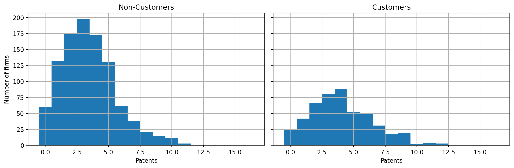
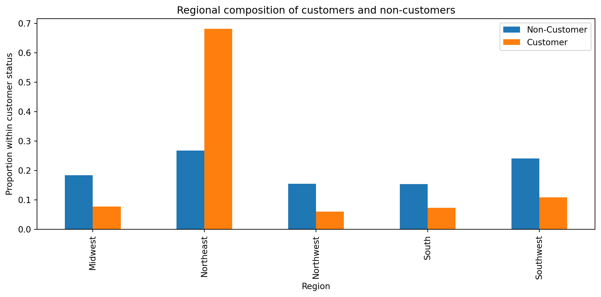
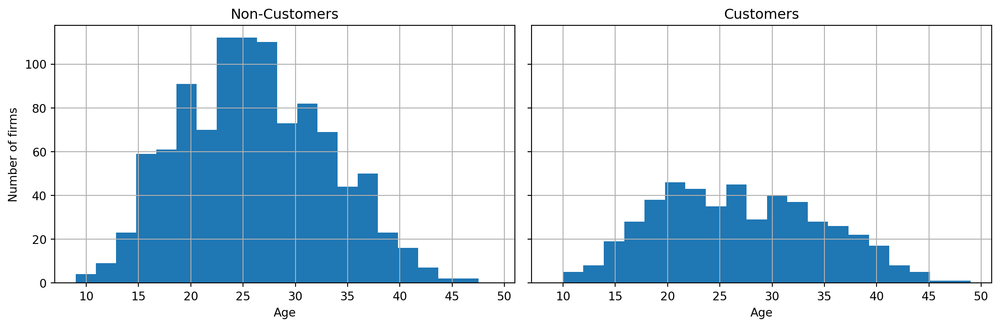
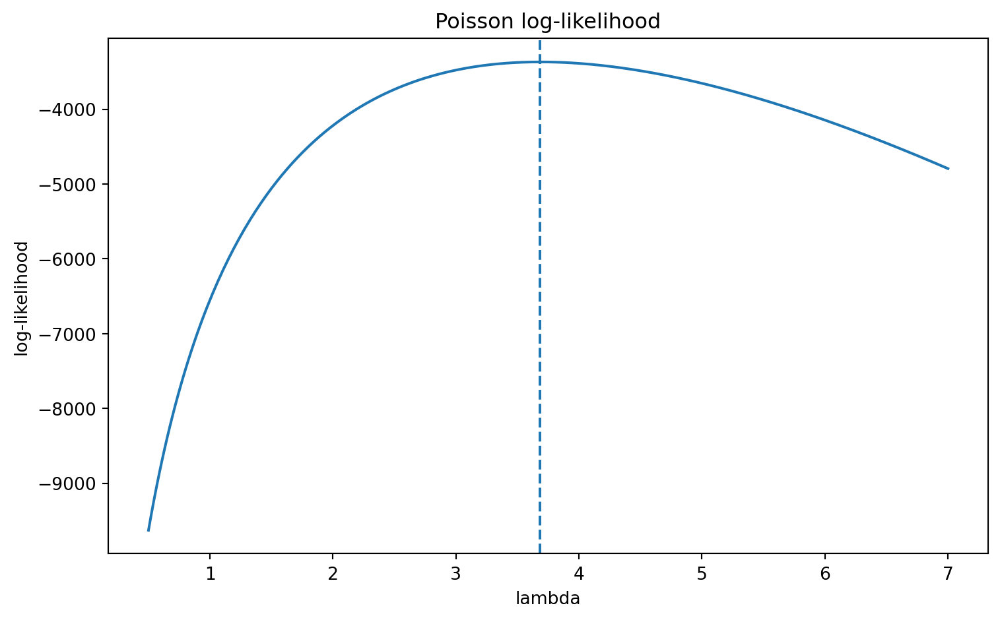

Poisson Regression and Maximum Likelihood Estimation
A Case Study of Blueprinty’s Software and Patent Awards
Introduction
Blueprinty sells software designed to help engineering firms prepare blueprints for patent applications. The company’s marketing team would like to argue that firms using Blueprinty’s software are more successful in getting patents approved.
This is not a trivial claim to evaluate. The data are observational rather than experimental: firms are not randomly assigned to become Blueprinty customers. As a result, any raw difference in patent counts between customers and non-customers could reflect other characteristics of the firms, such as age or regional location, rather than the effect of the software itself.
In this post, I first explore the data, then derive a simple Poisson model via maximum likelihood estimation, and finally extend the analysis to a Poisson regression that adjusts for firm characteristics.
Exploring the Data
The dataset contains 1,500 firms and includes four variables: patent counts, region, firm age, and customer status.


The exploratory analysis reveals three important patterns. First, customer firms have higher raw patent counts than non-customer firms on average: customer firms average about 4.13 patents, compared with about 3.47 for non-customer firms. Second, patent counts are non-negative integers and right-skewed, which makes a Poisson model a natural starting point. Third, Blueprinty customers do not appear to be randomly distributed across observable firm characteristics. In particular, customer firms are heavily concentrated in the Northeast and are slightly older on average than non-customers.
These differences matter because they suggest that a raw comparison of patent counts may overstate or misstate the effect of Blueprinty’s software. Some of the observed difference could instead reflect differences in regional composition or firm age.
A Simple Poisson Model via Maximum Likelihood
The dependent variable in this dataset is a count: the number of patents awarded to a firm over the last five years. Because this outcome is non-negative, integer-valued, and right-skewed, a Poisson model is a natural starting point. In the simplest version of the model, I assume that each firm’s patent count is drawn independently from a Poisson distribution with common rate parameter (). \[ Y_i \sim \text{Poisson}(\lambda) \]
Under this model, the probability of observing patent count (y_i) is:
\[ P(Y_i = y_i \mid \lambda) = \frac{e^{-\lambda}\lambda^{y_i}}{y_i!} \]
Assuming the observations are independent, the likelihood for the full sample is:
\[ L(\lambda) = \prod_{i=1}^n \frac{e^{-\lambda}\lambda^{y_i}}{y_i!} \]
Taking logs gives the sample log-likelihood:
\[ \ell(\lambda) = \log L(\lambda) = \sum_{i=1}^n \left(-\lambda + y_i \log \lambda - \log(y_i!)\right) \]
I maximize the log-likelihood rather than the likelihood itself because the logarithm turns products into sums, which makes the objective function easier to work with numerically.

The log-likelihood is single-peaked and reaches its maximum at approximately (= 3.685). The numerical optimization result is essentially identical to the sample mean of the patent counts. This matches the standard Poisson result that the maximum likelihood estimator of () is the sample mean. In substantive terms, the simple Poisson model estimates that the average firm in this dataset receives about 3.68 patents over the five-year period.
This simple model is useful as a baseline, but it is also restrictive because it assumes that all firms share the same expected patent rate. In reality, firms differ in age, region, and customer status, so the next step is to allow the Poisson rate parameter to vary across firms.
Poisson Regression
The simple Poisson model assumes that every firm shares the same expected patent rate. That is restrictive, since firms differ in age, location, and customer status. To allow the expected patent count to vary across firms, I extend the model to a Poisson regression.
\[ Y_i \sim \text{Poisson}(\lambda_i) \]
\[ \lambda_i = \exp(x_i' \beta) \]
Here, (x_i) contains observable firm characteristics, including age, region, and customer status. The exponential link ensures that the predicted rate parameter (_i) is always positive.
Table 1 compares the manually optimized Poisson regression coefficients with the estimates from the built-in GLM implementation. The two sets of estimates are nearly identical.
| variable | custom_mle | glm_coef | glm_se | |
|---|---|---|---|---|
| 0 | const | -0.509992 | -0.508920 | 0.183179 |
| 1 | age | 0.148706 | 0.148619 | 0.013869 |
| 2 | age_sq | -0.002972 | -0.002970 | 0.000258 |
| 3 | region_Northeast | 0.029155 | 0.029170 | 0.043625 |
| 4 | region_Northwest | -0.017578 | -0.017575 | 0.053781 |
| 5 | region_South | 0.056565 | 0.056561 | 0.052662 |
| 6 | region_Southwest | 0.050567 | 0.050576 | 0.047198 |
| 7 | iscustomer | 0.207609 | 0.207591 | 0.030895 |
The manually optimized Poisson regression coefficients are nearly identical to the estimates produced by statsmodels’ built-in GLM routine. Although the numerical optimizer returned a warning about precision loss, the parameter estimates match the GLM results extremely closely, which suggests that the manually coded log-likelihood is correct.
The coefficient on iscustomer is positive (about 0.208) and statistically significant. Because the Poisson model uses a log link, this coefficient is interpreted multiplicatively rather than additively. Exponentiating the estimate gives (e^{0.208} ), which suggests that, holding age and region fixed, customer firms have an expected patent rate about 23% higher than otherwise similar non-customer firms.
The age terms suggest a nonlinear relationship between firm age and patent output: the positive coefficient on age and negative coefficient on age squared imply that patent counts tend to rise with age at first, but at a decreasing rate.
The regional controls vary in sign and magnitude, but most are not statistically distinguishable from the omitted baseline region in this specification.
The Effect of Blueprinty’s Software
The coefficients from a Poisson regression are not directly interpretable as “additional patents,” because the model is expressed on the log-rate scale rather than as an additive change in patent counts. To obtain a more interpretable quantity, I constructed two counterfactual datasets: one in which every firm is treated as a non-customer and one in which every firm is treated as a customer, while holding age and region fixed.
Using the fitted model, the average predicted patent count is about 3.44 if all firms are treated as non-customers and about 4.23 if all firms are treated as customers. The difference is approximately 0.79 patents over the five-year period.
This result is consistent with Blueprinty’s marketing claim, but it should not be interpreted as definitive causal evidence. Since the data are observational rather than randomized, unobserved firm characteristics may still influence both software adoption and patent outcomes.
Overall, the results suggest that Blueprinty’s software is associated with stronger patent outcomes after adjusting for observable firm characteristics, though stronger causal claims would require a more rigorous research design.